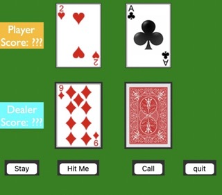
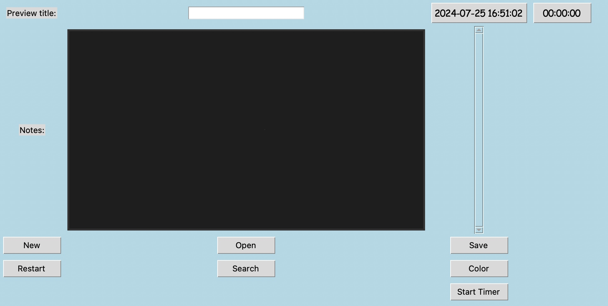

Blackjack
Here is a Blackjack I created during the second semester of my sophomore year at Umd. The game works the same as the Blackjack/21 game. The goal of 21 is to get your card values as close to 21 as possible without exceeding or 'busting' it. Moreover, you have to beat whatever hand the dealer and other players have drawn; if they have 20 and you have 19, you lose the hand.
Note
Here Is a notebook my team created during my 2nd semester sophomore year at Umd. The notebooks let you create multiple different notes, and you can save them together. You can even open the note you saved and edit it again. This notebook has three projects turned into one. In the project's final part, my team added some features to enhance it. For example, one of the features we added is a clock in the corner, so the user can know what time it is while they write down their notes.
Credit to my fellow classmates/team members: Asad Khan, Momodeep Chahal, and Young Lee.
PowerPoint
I created a PowerPoint during my first semester of Freshman year at Umd. The purpose of the PowerPoint is to give a summary of what the Division of Information Technology (IT) provides to the students, representatives, and majors connected to it. It helps upcoming students get a better understanding of what the department can help them with. Furthermore, it gives students who haven't been to the IT website a good refresher on what they have there.